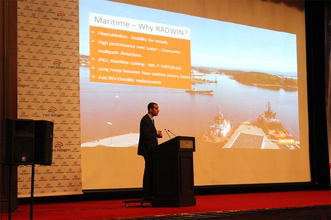
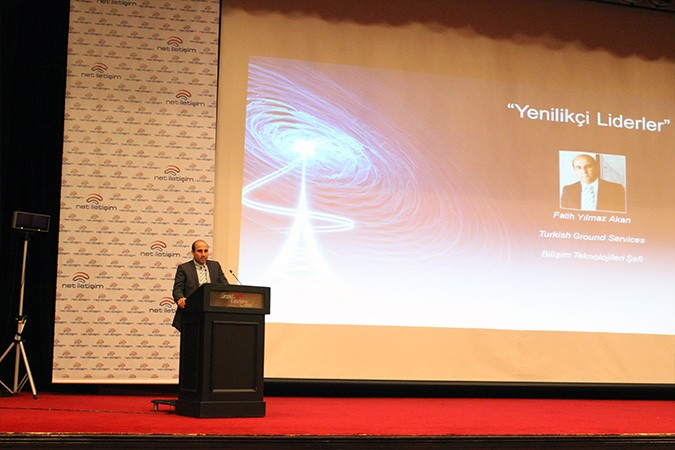
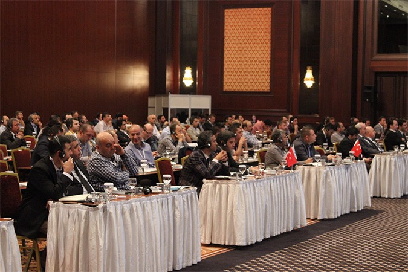
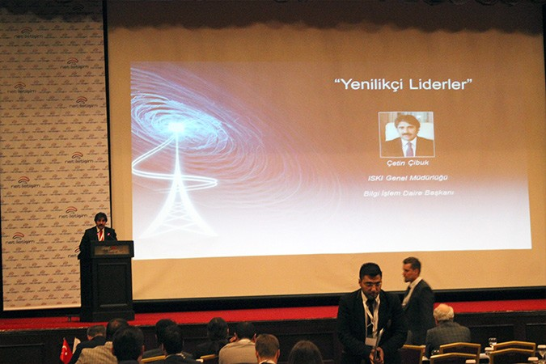

Net İletişim Teknoloji, 20 yıllık deneyimi ve sektörde gerçekleştirdiği önemli kablosuz altyapı projeleriyle ilklere imza atmanın gururunu yaşıyor. Net İletişim Teknoloji, gerçekleştirdiği “Yeniliklerin Liderliği” toplantısında Dünya devi, kablosuz ekipman üreticisi Radwin’in 750Mbps genişband kapasite sunan noktadan noktaya ve noktadan çok noktaya ekipmanları ile Mobil Çözümlerini tanıttı.
Yeniliklerin tanıtıldığı toplantıya, Net İletişim çalışanları yanında, Radwin’in CEO’su Roni Weinberg, Radwin Genel Müdürü Raymond Forado, Radwin Ürün Direktörü Yossi Nisan katıldı.

“Yeniliklerin Liderliği” toplantısında, Dünyada ve Türkiye'de son yıllarda, Servis Sağlayıcıları, Mobil Operatörler, Emniyet, Jandarma, Kıyı Emniyeti, Metrobüs, Otobüs ve Tünel işletmecilerinin vazgeçilmez olarak kabul ettiği Radwin’in Yeni Nesil Kablosuz Mobil Ekipmanları, canlı demo ile tanıtıldı. Canlı Mobil Demo’da, Emniyet güçlerininin suçu önleme ve suçluyu yakalamada kablosuz teknolojileri nasıl kullandığı, Polis aracı içindeki kamera ve izleme merkezindeki kameralarda suçlunun nasıl takip edildiği örnekleri ile gösterildi. Çok genişband kapasite sunan kablosuz mobil ekipmanların tanıtımında konuşan Net İletişim Teknoloji genel müdür, ''sabit veya mobil olarak uygulanan teknolojiyle mevcut kapasitelerden daha genişband erişim sağlanabiliyor. Radwin Kablosuz Mobil ekipmanları ile erişim kopmadan ve mobilite tam sağlanıyor. Mobil cihazlarda 200Mbps’nin üzerinde handover kapasitesi sunuluyor. Görüntü, ses ve data aktarımında hiç kopma olmadan yüksek kalitede erişim sunuluyor. Özellikle Radwin Mobil ürünlerinin yüksek standartlar taşıyor olması sebebiyle, metro, metrobüs, tünel ve her türlü taşımacılıkta sektöründe ve dünyanın birçok ülkesinde en çok tercih edilen kablosuz altyapı özelliğini taşıyor. Net İletişim olarak Türkiye’de de Radwin ürünleri ile başarı hikayeleri yazıyor ve kurum ve kuruluşların bu yeni yüksek teknolojiden dünya ile eşzamanlı faydalanmasını sağlıyoruz. Öte yandan, bu önemli günde Radwin’in geçtiğimiz ay piyasaya sunduğu, serbest frekansta çalışan Net 750 Mbps süper geniş band kapasite sunan, 150 Km'ye kadar çalışma performansı sergileyen ekipmanının tanıtımını yapıyoruz” dedi.

Radwin’in 750 Mbps kapasite sağlayan ekipmanları: Net 750 Mbps süper genişband kapasite, 150 Km’ye kadar mükemmel çalışma performansı, 5.1 – 6.0 GHz Geniş frekans aralığı, Akıllı dinamik kanal bant seçim özelliği: 20/40/80 MHz, OFDM, MIMO 2x2 ve QAM256 modülasyonu, Agresif NLOS ve LOS bağlantı imkanı, 16E1s/T1s ve Ethernet bağlantısı, NLOS’da kesintisiz çalışma ve çok yollu koşullar, ETSI Uyumlu, Küçük anten çapı ile az yer kaplar, Sağlamlaştırılmış IP-67 uyumlu, Mükemmel performans ve çok kolay kurulum imkanı sunuyor.

Net İletişim Teknoloji, distribütörüğünü yaptığı diğer kablosuz ekipmanlar ve Radwin ürünleri için Türk kullanıcılarına anahtar teslimi projeler sunuyor. Net İletişim Teknoloji genel müdürü “Distribütörlüklerimizin yanı sıra, proje geliştirme, montaj, teknik destek, SLA gibi uygulama hizmetleri de sunmaktayız.
Net İletişim, sadece yeni nesil teknolojileri ithal etmekle kalmayıp, Teknik Site Survey (TSS), Rollout planlaması, Radyo Network Planlaması (RNP), Civil Work Operasyonları, CSN Ekipman montajları, RAN, MW, CPE, ASN, CSN, AAA konfigürasyonları, Transmissyon ve devreye alma ve optimizasyon hizmetlerini kendi iç bünyesindeki eğitimli geniş mühendis kadrosu ile sunmaktayız” dedi.
Net İletişim Teknoloji’nin sunduğu yüksek teknoloji ürünü kablosuz teknolojiler, kolay kurulumu, az maliyetli oluşu, kazı ve fiber kablolama gerektirmemesi, ‘tak çalıştır, sök kur’ mantığında çalışıyor olması ve stabil yüksek kapasite sunuyor olması sebebiyle tercih ediliyor. Net İletişim Teknoloji, Kablosuz Ağ Çözümlerini KOBİ’lerden büyük işletmelere, Internet Servis Sağlayıcılar, Telekom Operatörleri, Elektrik Dağıtım Şirketleri, Barajlar, Atık Su ve Su Toplama Merkezleri, Tren, Metro, Metrobüs ve Tünel İşletmecileri, Liman İşletmecileri, Petrol ve Gaz İşletmeleri, Belediyeler, Kıyı Emniyeti, Polis, Jandarma, Kamu Güvenliği, Havayolu Şirketleri, Havaalanı İşletmecileri, ve Sınır Güvenliği, Organizasyon Şirketleri AVM’ler, Okul ve Üniversiteler ve kamu kurumlarına kadar geniş bir yelpazeye sunuyor.
Yenilikçi Liderler” Kablosuz Teknolojileri tercih ediyor
Toplantıya katılan ve Net İletişim Teknoloji’nin sağladığı kablosuz altyapıyı kullanan “Yenilikci Liderler”den; Mehmet Akif Görentaş (Bağcılar Belediye Başkanlığı, Strateji Geliştirme ve Mali Hizmetler Müdürü), Çetin Çibuk (ISKI Genel Müdürlüğü Bilgi Işlem Daire Başkanı), Ercan Özcelik (Beyoğlu Bölgesi Kamu Hastaneler Birliği Bilişim Teknoloji Uzmanı), Fatih Yılmaz Akan (Turkish Ground Services Bilişim Teknolojileri Şefi) ve İbrahim Hakkı Salim (TUBİTAK - BİLGEM Uzman Arastırmacı) kablosuz teknolojilerin sağladığı avantajları dile getirdiler.

“Yenilikçi Liderler”, Noktadan noktaya, noktadan çok noktaya, dış ortam Wi-Fi ve mobil çözüm olarak sunulan kablosuz teknolojilerin kazı derdi olmadan kolay kurulum yapılıyor olması, işletme maliyeti gerektirmemesi, katma değerli ve uygun maliyetli olması ve Net İletişim Teknoloji’nin sunduğu projelendirme ve Türkiye’de yerleşik eğitimli mühendis kadrosu ile teknik destek ve katma değerli hizmet avantajının kendilerine sağladığı faydayı vurguladılar.
Net İletişim Teknoloji’nin Uluslararası iş ortakları arasında, Radwin, Intracom Telecom, Alvarion, Telrad, Wavion Wireless Networks, Altai, InfiNet Wireless, Ceragon Networks bulunmaktadır.